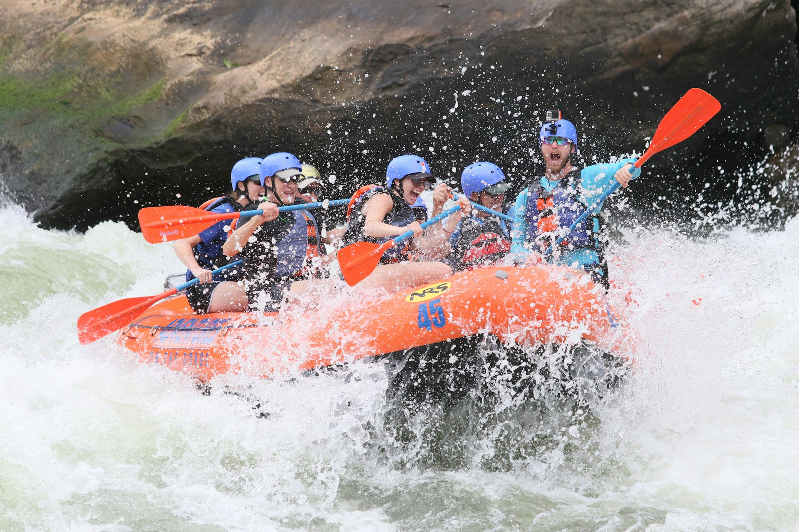

Welcome to Dry Oar Water Rafting - your ultimate adventure destination! Our mission is to provide thrilling and unforgettable rafting experiences, ensuring your satisfaction and safety every step of the way. Join us for an adventure of a lifetime!

Welcome to Dry Oar Water Rafting - your ultimate adventure destination! Our mission is to provide thrilling and unforgettable rafting experiences, ensuring your satisfaction and safety every step of the way. Join us for an adventure of a lifetime!
Dry Oar Water Rafting was founded in 1981 by two adventurous friends who love nature and spending time with nature rafting. From the humble beginnings of a small wooden raft, we have grown into a leading rafting company, pushing the boundaries of excitement and fun. Our journey is filled with daring adventures, wild rapids, and the joy of creating unforgettable memories for our clients in a family friendly and faith based culture. Join us as we continue to write the history of thrilling rafting experiences!